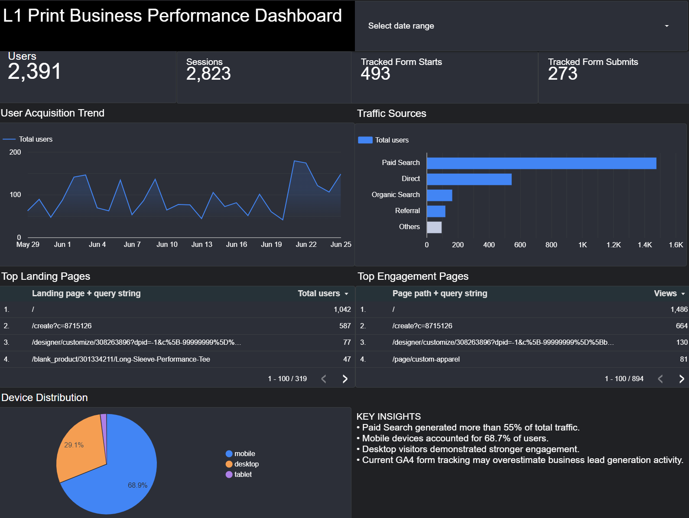
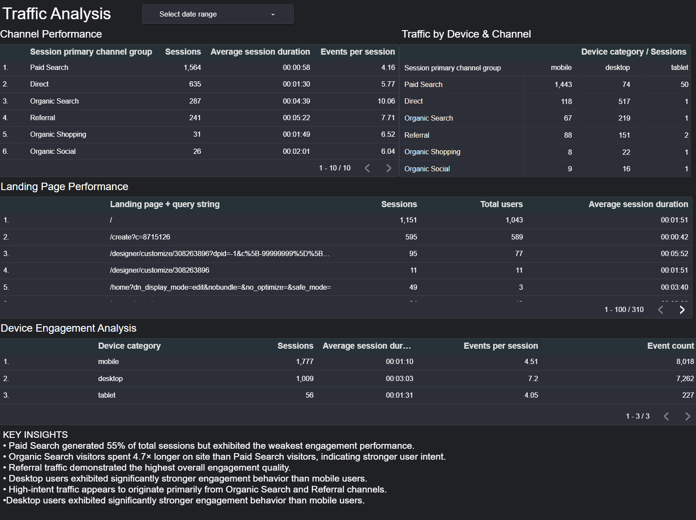
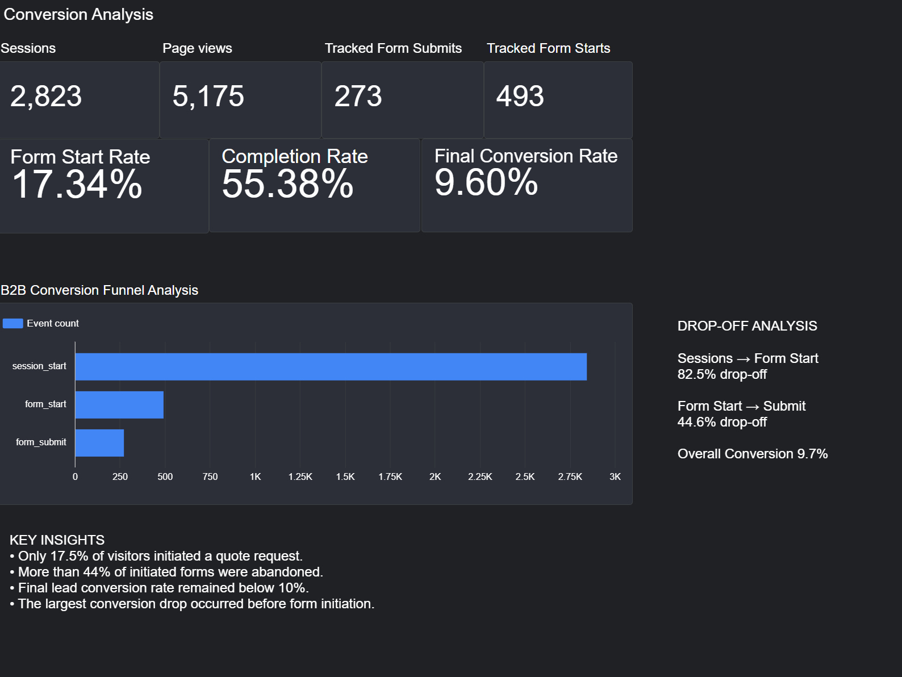
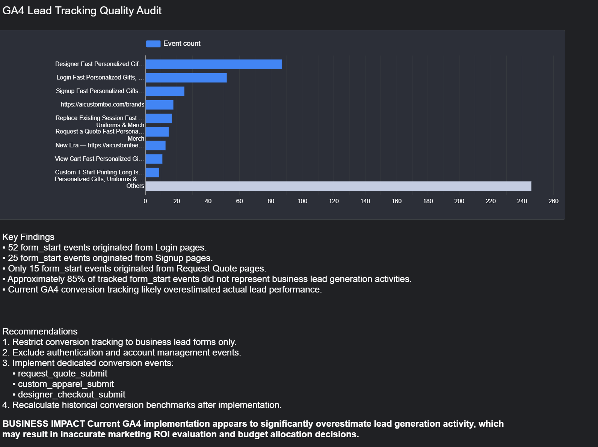

Qinrui Hu
Data Analytics Portfolio
Columbia University graduate student specializing in statistics,
business analytics, marketing analytics, and data quality auditing.
GA4
Looker Studio
SQL
Excel
Marketing Analytics
Business Intelligence
Project 1: L1 Print Marketing Analytics Dashboard & GA4 Conversion Audit
Project Overview
Conducted a marketing performance analysis and GA4 conversion tracking audit
for a B2B custom printing company using Google Analytics 4 and Looker Studio.
The project evaluated traffic acquisition performance, conversion funnel effectiveness,
and the accuracy of lead tracking implementation.
Tools Used
- Google Analytics 4 (GA4)
- Looker Studio
- Excel
Key Findings
- Paid Search generated approximately 55% of total website traffic, but showed the weakest engagement quality.
- Organic Search and Referral traffic demonstrated stronger user engagement and higher interaction quality.
- The tracked end-to-end conversion rate was approximately 9.7%.
- The current GA4 implementation appeared to significantly overestimate business lead generation performance.
GA4 Tracking Audit Results
- 52 form_start events originated from Login pages.
- 25 form_start events originated from Signup pages.
- Only 15 form_start events originated from business Request Quote pages.
- Non-business user activities were being recorded as business conversions.
Recommendations
- Restrict conversion tracking to business lead forms only.
- Exclude authentication and account management events.
-
Implement dedicated business conversion events:
- request_quote_submit
- custom_apparel_submit
- designer_checkout_submit
- Recalculate historical conversion benchmarks after tracking correction.
Business Impact
The current GA4 implementation may significantly overestimate actual lead generation activity,
potentially resulting in inaccurate marketing ROI evaluation and inefficient budget allocation decisions.
Dashboard Screenshots
Executive Overview

Traffic Analysis

Conversion Analysis

GA4 Conversion Tracking Audit
